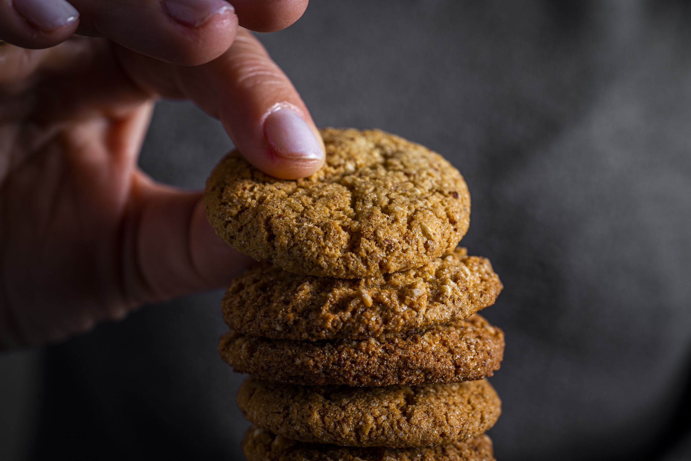
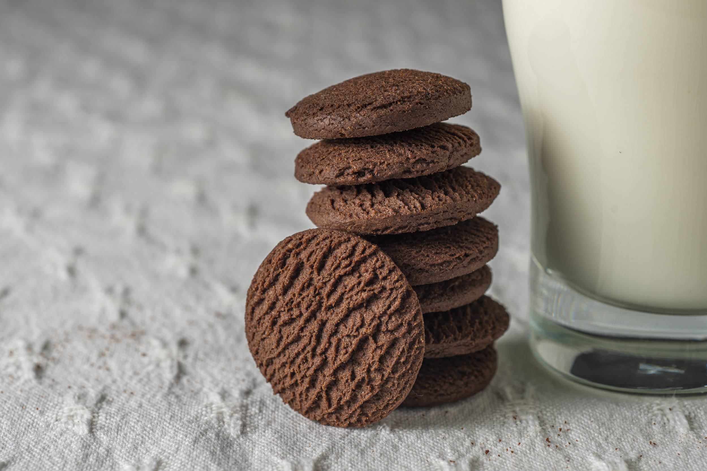
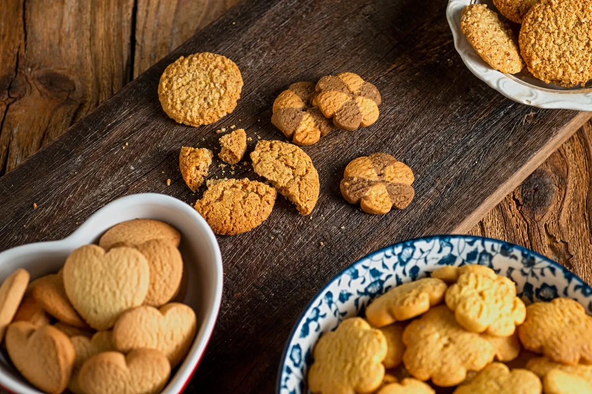
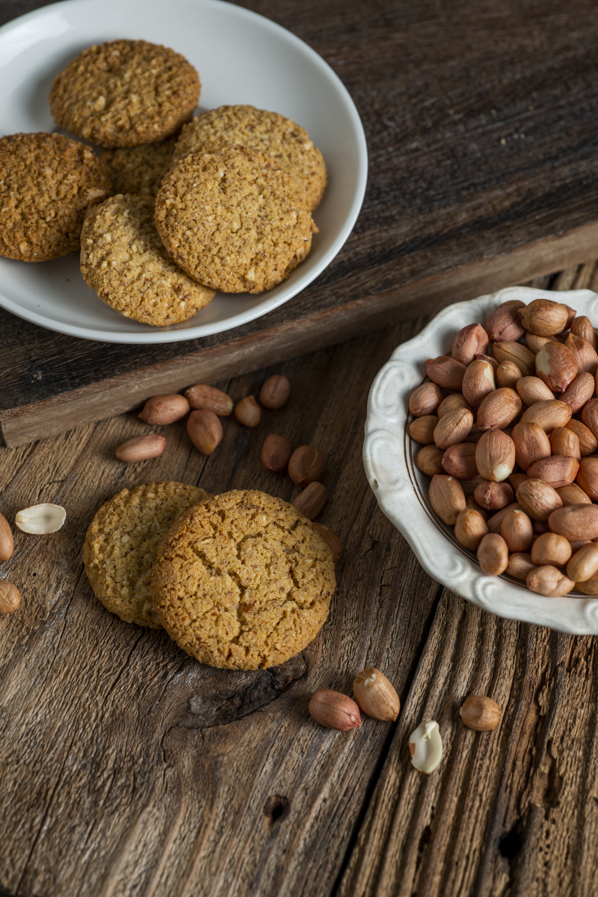
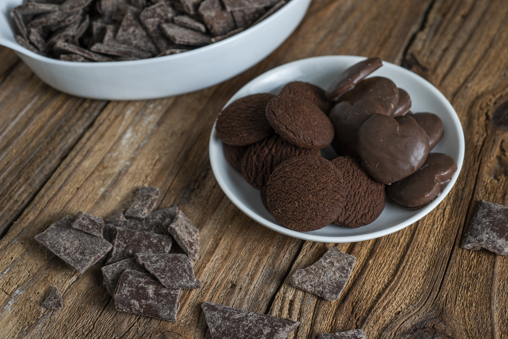
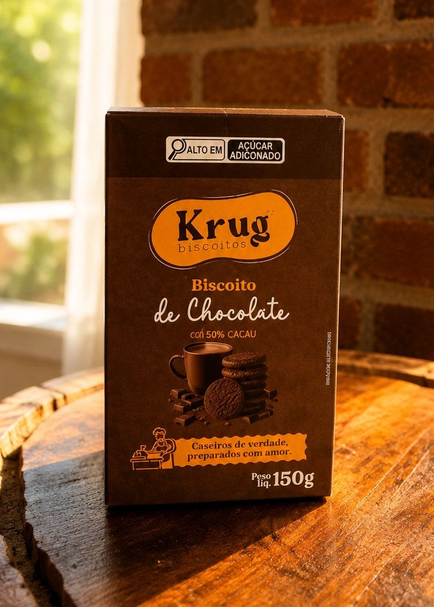
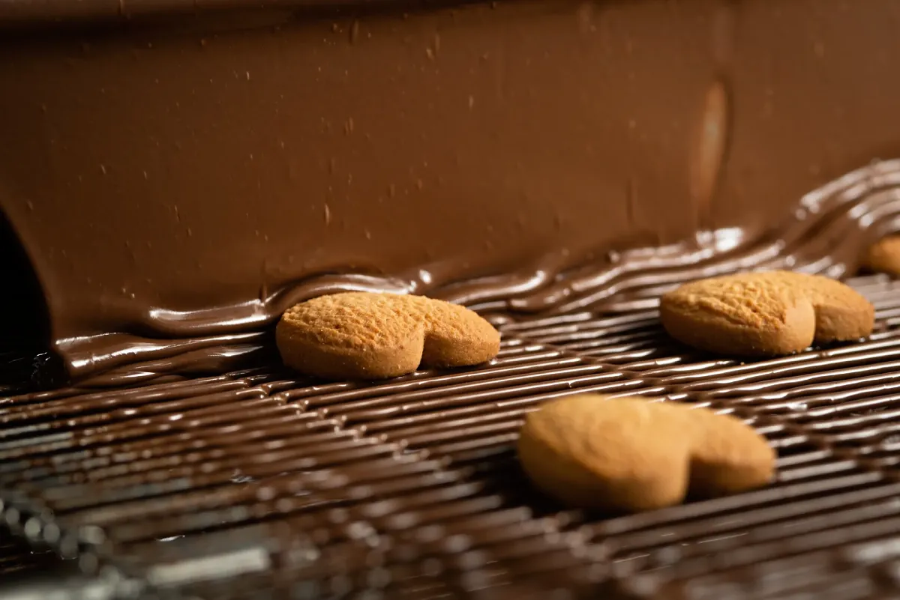
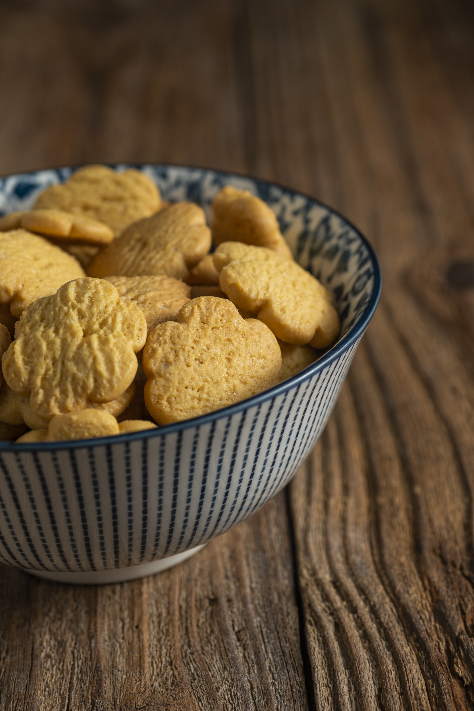
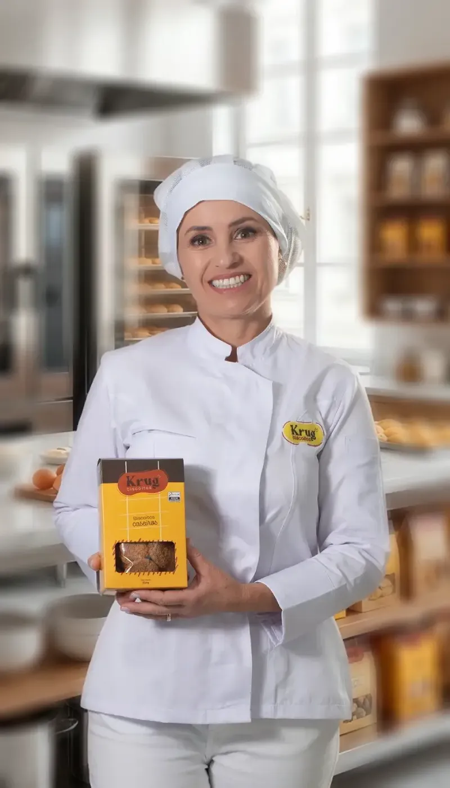

De origem gaúcha, feito com ingredientes de qualidade e o cuidado de quem acredita que cada mordida merece ser especial.
Escolha seu novo sabor favorito aqui!Cada receita nasce do cuidado com os detalhes, do tempo respeitado e do carinho em cada etapa. Na Krug, o sabor não vem sozinho — ele chega acompanhado de memória, afeto e da alegria de presentear alguém especial.
Encontre o seu momento


Um biscoito, um café e o tempo que a gente merece.
Krug Biscoitos
Feito para dividir. Difícil é não repetir.
Krug Biscoitos




Nossa história
À frente da Krug está Vivian Krummenauer, uma empreendedora que encontrou na mudança a oportunidade de construir uma nova história. Durante a pandemia, ela deixou o trabalho na área da estética e entrou no ramo alimentício. Em 2021, nasceu a Krug Biscoitos, em Igrejinha, no Rio Grande do Sul.
Começar uma indústria trouxe desafios e aprendizados. Vivian precisou conhecer um novo mercado e aprender a conduzir o negócio, mesmo ouvindo que a ideia não daria certo. Com fé, coragem e persistência, foi construindo o caminho da marca.
Hoje, a Krug leva seus biscoitos doces e salgados a diferentes redes de supermercados, mantendo suas raízes em Igrejinha. Por trás de cada caixinha está essa trajetória: uma mulher que acreditou na própria ideia e segue trabalhando para que a Krug faça parte dos bons momentos de cada vez mais pessoas.
Cada caixinha carrega um pouco dessa história.
Produzido
Da terra da Oktoberfest para os teus bons momentos.
A Krug é produzida em Igrejinha, no Rio Grande do Sul, onde a cultura alemã faz parte da nossa história e a Oktoberfest celebra o encontro, a gastronomia e as tradições da região.
É nesse lugar que fazemos nossos biscoitos, com ingredientes de qualidade e cuidado em cada receita. Carregamos um pouco dessa cultura em cada caixinha: o prazer de receber, compartilhar algo gostoso e transformar uma pausa em um bom momento.
Descubra o seu
Escolha um momento e descubra a caixinha perfeita pra ele.
Pedir meu favoritoPara o seu
Fale com a gente